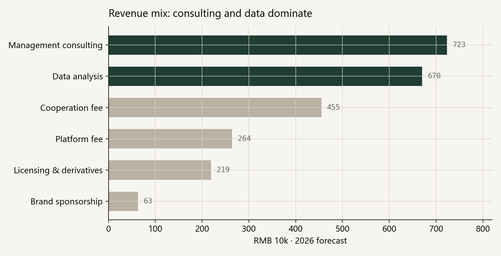

穗乐康 · 乡村 IP 打造平台
Sui Le Kang: A Rural IP Platform · 项目负责人
我把一个乡村 IP 的想法，做成了一份投资人能读的三年财务模型。
01 / Question一个乡村 IP 平台，怎么让投资人相信它能赚钱？
“乡村振兴”是一个很好的主题，但投资人不会为主题买单。这个项目要回答的是：平台靠什么收费、收入从哪里来、多久能回本、如果做不成，投资人怎么退出。
我负责的部分是商业模式与财务模型：把“帮乡村做 IP”这句话，拆成 7 条可以单独定价的收入线。
02 / Data田野调查、政策文本与可比案例
团队先做了乡村与地方文旅部门的调研，梳理了乡村振兴与文旅融合的政策，再参考明月村等“文创+旅游”案例，形成对客单价、合作方式与转化路径的假设。
这些假设不是精确数据，而是商业计划书必须写清楚的“如果”：如果每个合作乡村的咨询费是 X，如果 IP 授权费率是 Y，如果复购率是 Z，三年能做到多大。
03 / Method双收益模式与三年财务模型
平台采用“IP 授权 + 产品销售”的双收益模式，拆成 7 条收入线：品牌赞助、授权与衍生品、合作提成、商家入驻平台费、数据分析服务、管理咨询、粉丝经济。
资本结构为 500 万元注册资本：
| 出资方 | 金额（万元） | 比例 |
|---|---|---|
| 团队自筹 | 40 | 8% |
| 青年创业基金会 | 100 | 20% |
| 非银行金融机构 | 200 | 40% |
| 企事业单位与个人 | 160 | 32% |
| 合计 | 500 | 100% |
我认缴团队股 12.5 万元，占团队 40 万元的 31.25%，占公司 500 万元的 2.5%。团队前两年不分红，第三年起按净利润的 20% 分红；同时规划了 5 种投资退出机制。
04 / Result三年收入预测 5,632 万
| 年份 | 收入预测（万元） | 同比 |
|---|---|---|
| 2024 | 1,480 | — |
| 2025 | 1,758 | +18.8% |
| 2026 | 2,394 | +36.2% |
| 三年合计 | 5,632 | — |
商业计划书测算的投资回报率约 189.2%，回收期不足 2 年。项目获中国国际大学生创新大赛（2024）校赛银奖、第九届“互联网+”校赛铜奖、第十二届“挑战杯”校铜。

What the model actually says
这张图是我后来回看时最在意的一张。它说明这个平台当时的收入假设，更接近一家“给乡村做咨询和数据服务”的公司，而不是一个靠 IP 授权赚钱的平台。
这不是坏事，但它必须在 BP 里说清楚。否则投资人会以为你在做 IP，实际你在做咨询。
05 / Limitation四个必须承认的问题
- 5,632 万是预测，不是实际营收。项目没有进入实际运营。
- 收入结构偏向咨询与数据服务。IP 授权与衍生品在 2026 年只占 9%，与“IP 平台”的叙事有距离。
- 三张表之间存在口径差异。收入表合计 5,632 万，利润表主营收入为 4,996 万；净利润也有两个版本。BP 阶段可以容忍，但不能当作审计过的报表。
- 团队 10 人，我负责统筹与财务模型。不是所有模块都由我独立完成。
06 / Next如果再做一次
- 把收入拆成“客单价 × 客户数 × 转化率”，做敏感性分析。
- 把三张表做成勾稽一致的版本，先内部对平，再对外。
- 先做一个乡村的付费试点，用真实回款替换假设。
- 把“咨询收入”与“IP 授权收入”分开估值，避免叙事与模型打架。